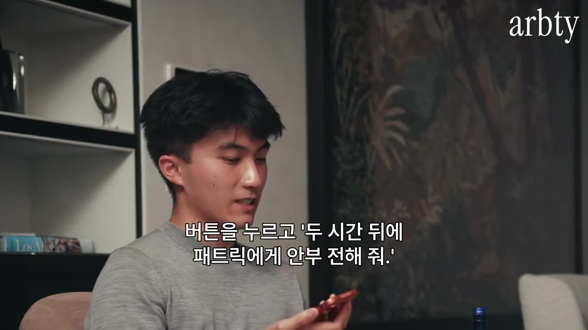

세상이 바뀐 것 같습니다 (23살 AI 에이전트 Instinct 창업자)
▶ 원본 영상 보기한눈에 보기
- Instinct는 앱 없이 전화번호·이메일·컴퓨터를 가진 AI 개인 비서입니다. 문자·전화·이메일로 일을 시키면 웹에서 처음부터 끝까지 대신 처리하고, 급한 일이 있으면 먼저 전화도 겁니다.
- 출시 약 1년 된 초대제 서비스인데 마케팅비 0원으로 사용자가 매일 약 10%씩 늘고 있고, 플랫폼을 거치는 거래액은 연 10억 달러(약 1조 원)에 다가가고 있습니다. 그중 50%가 여행입니다.
- 신뢰가 핵심 지표입니다. 가입 3주 뒤 사용자의 40%가 신용카드를 맡기고, 민감 정보를 하나라도 연결한 사용자는 유지율이 80%입니다.
- 사용자는 무료로 쓰고, 혜택을 보는 가맹점이 거래 수수료(take rate)를 내는 방식(Apple Pay·Amazon과 비슷)을 생각하고 있습니다. 광고처럼 사용자 행동을 조종하는 모델은 하지 않겠다고 합니다.
- 가장 어려운 문제는 컴퓨팅입니다. 필요량이 거의 매주 2배로 늘고, 확보하는 데 수개월이 걸려 얼마나 미리 사 둘지가 큰 도박입니다.
이런 분께 도움이 됩니다
- AI 에이전트가 쇼핑·여행·예약·배달 같은 소비자 서비스를 어떻게 바꿀지 궁금한 기획자·창업자·투자자
- 자기 사업이 "앱 체류 시간"으로 돈을 버는지, "실제 거래"로 돈을 버는지 점검해 보고 싶은 실무자
- 소비자 AI 제품의 신뢰·보안·UX를 어떻게 설계하는지 사례가 필요한 분
핵심 내용
Instinct란 무엇인가: "그냥 개인 비서" (0:21)
- 23살 창업자가 약 1년 전에 세운 회사이고, 제품은 꾸밈없이 말해 개인 비서라고 합니다. 초반에 크게 주목받은 이유는 "그냥 된다"는 것입니다. 2023년 ChatGPT를 처음 쓴 뒤로 모두가 기다려 온 "나 대신 행동하는 AI"를 실제로 구현했다는 설명입니다.
- 별도 앱이 없습니다. Instinct는 자기 전화번호·이메일·컴퓨터를 갖고 있어서 사용자는 문자·전화·이메일로 일을 맡깁니다.
- 먼저 연락하기도 합니다. 창업자 본인은 몇 달 동안 세 번쯤 전화를 받았다고 합니다. 예: "오후 3시까지 서명할 문서가 있는데 지금 2시 55분입니다. 받은편지함에 있고, 맨 위로 올라오게 메일을 다시 보내 드릴까요?"

- 인터페이스가 단순하다고 기능이 제한된 것은 아닙니다. 컴퓨터를 갖고 있으니 사람이 인터넷에서 하는 일은 거의 다 할 수 있습니다.
💡 새 앱을 배울 필요가 없습니다. 사람에게 부탁하듯 문자하면 끝납니다.
사용자들이 찾아낸 활용 사례 (3:27)
| 사례 | 하는 일 |
|---|---|
| US Open 커플 | 경기장 전광판(jumbotron)에 잡힌 자기들 영상을 찾아 달라고 하자 Instinct가 직접 구해 옴 |
| 옷장 코디 | 옷·신발을 하나하나 스캔하고 자기 얼굴·체형도 스캔 → 매주 코디를 "내가 입은 모습" 이미지로 받아 봄 |
| 쇼핑 | 인터넷에서 옷 수천 벌을 찾아 입혀 본 모습을 보여 줌 → "이거 집으로 보내 줘" 하면 주문. 매일 새 코디 3벌 제안 |
| 재테크 목표 | "몇 월까지 얼마 모으기" 같은 목표를 함께 관리 |
| 구독 해지 | 은행 계좌를 연결하면 결제·구독 내역을 훑어 안 쓰는 구독을 찾음 → 사이트에 로그인하고(이메일 인증까지 처리) 해지 → 이번 달 아낀 금액을 알려 줌 |
| 친구 모임 | 6명 그룹이 "매주 새로운 걸 기획해 줘" → 각자 시간·취향·Spotify 기록을 보고 공연을 고름. Uber 한 대가 최적 경로로 6명을 차례로 태우도록 조율 |
- 진행자: "소비자의 귀찮음이나 관성에 기대는 제품은 끝났네요."
Instinct끼리 대화하는 "신뢰 네트워크" (6:08)
- 촬영 시점 기준으로 나온 지 약 열흘 된 기능입니다. 바쁜 직장인의 일정 잡기에서 오가는 "이 시간 돼요?" "안 돼요, 이때는요?" 같은 핑퐁을 없애는 게 목적입니다.
- 사용 방법: "이 사람과 이번 주 안에, 이 시간대 중에 만나고 싶어. 시간 찾아 줘"라고 의도만 말하면, 상대방의 Instinct와 직접 조율해 캘린더에 일정을 넣습니다.
- 이름은 trusted person network입니다. 믿을 수 있는 사람만 연결하고, 사람마다 권한 수준을 다르게 줄 수 있습니다.
- 배우자: 전부 공유
- 동료: 업무 캘린더와 받은편지함 일부만 공유하고 나머지는 차단
- 상대가 허락된 범위를 넘어 정보를 캐면 "Patrick이 이런 정보를 찾고 있어요"라고 알려 줍니다. 기술적 접근 제한에 더해 "신뢰를 깨면 관계가 상한다"는 사회적 규범도 함께 쓰는 설계입니다.
💡 일정 잡기에서 오가는 연락을 비서끼리 대신 끝냅니다. 내가 할 일은 의도를 말하는 것뿐입니다.
인터넷이 다시 쓰인다: 식당 예약과 여행 (11:31)
창업자는 앞으로 몇 년 안에 인터넷이 다시 쓰이고, 사람들이 소프트웨어를 쓰는 방식이 완전히 달라질 것으로 봅니다.
식당 예약: 지금은 선착순입니다. 에이전트는 5초마다 전 세계 모든 식당을 확인할 수 있으니 선착순 구조를 쉽게 무너뜨립니다. 그래서 Instinct는 예약 방식 자체를 새로 만드는 중이고, 제휴는 곧 발표한다고 합니다.
- 사용자 쪽: 배우자의 30번째 생일 같은 특별한 날임을 에이전트가 식당에 알림
- 식당 쪽: "10단위 생일·주요 기념일 우선" 같은 선호를 밝힘 → 양쪽을 매칭
- 결과: 사용자는 중요한 날에 자리를 얻고, 식당은 원하는 손님을 받음
여행: 거래액의 50%가 여행이고, 초대제로 사용자가 아주 적은데도 거래액이 연 10억 달러에 다가가고 있습니다. "오늘 밤 뉴욕에 가야 해"라는 음성 메시지 하나로 아래가 모두 처리된다고 설명합니다.
- 현재 위치 확인
- 항공편 예약
- 호텔 예약
- 이동 연결
- 현지 일정 추가
- 1현재 위치 확인
사용자가 허락하면 위치를 보고 "지금 샌프란시스코에 계시네요"처럼 출발지를 파악 (15:46)
- 2항공편 예약
선호 항공사, 좌석 등급, 통로·창가 자리, 기내식, 결제 카드를 기억해 둔 대로 골라 예약
- 3호텔 예약
과거 숙박 기록(예: 지난 일곱 번 묵은 곳)과 선호를 반영해 처음부터 끝까지 예약
- 4이동 연결
공항까지, 공항에서 호텔까지 Uber를 캘린더 일정과 맞춰 배치
- 5현지 일정 추가
가서 하고 싶을 만한 일정까지 캘린더에 넣음
💡 기존 여행 플랫폼은 "보기 좋게 정리된 화면"이 가치였습니다. 화면 자체가 필요 없어지면 이 업계가 바뀝니다.
- 다만 기존 업체를 무너뜨리려는 게 아니라, 그들이 가진 데이터·네트워크와 협업해 업계를 다시 정의하겠다고 말합니다.
신뢰: 데이터를 얼마나, 언제 맡기나 (17:46)
- 데이터를 많이 줄수록 더 먼저 알아서 움직일 수 있는 "닭과 달걀" 구조입니다. 신뢰가 쌓이는 데 몇 주가 걸리고, 창업자는 그게 오히려 맞다고 봅니다.
- 원칙: 사용자는 언제나 자기 데이터를 통제해야 합니다. 편한 만큼만 공유하고, 언제든 되돌릴 수 있습니다.
- 숫자:
- 가입 3주 시점에 사용자의 40%가 개인 신용카드를 Instinct에 맡김 (그 전에 이탈한 사용자까지 포함한 비율)
- "첫 카드 등록까지 걸린 시간"과 "첫 비밀번호 공유까지 걸린 시간"을 신뢰의 대리 지표(proxy, 직접 재기 어려운 것을 대신 보여 주는 숫자)로 씀
- 민감 정보를 하나라도 연결한 사용자의 유지율은 80% (진행자: "소비자 앱으로는 말도 안 되는 수치")
보안: 에이전트와 분리된 감시 장치 (20:17)
- 보안 문제는 두 갈래로 나눠 봅니다.
- 민감 정보 저장: 다른 서비스들도 겪어 온, 풀 수 있는 문제입니다. 다만 아주 많은 노력과 주의가 필요합니다.
- 새로 생긴 위험: 에이전트가 카드로 자율 결제하고 이메일·캘린더 전체에 접근하는 건 처음 있는 일입니다.
- 에이전트 구조와 분리된 시스템으로 위험을 떼어 놓습니다.
- 방화벽(firewall): 들어오는 모든 텍스트·미디어를 검사해, Instinct를 속여 무언가 시키려는 악성 콘텐츠를 가로채거나 차단
- 행동 감시: Instinct의 모든 행동과 생각을 별도 시스템이 실시간으로 지켜보다가 실행 전에 멈추거나 승인·거부
- 환각 검사(1:01:32): 생각이 도구 실행(tool call)으로 넘어가기 전에, 에이전트와 이해관계가 분리된 검증기가 "샘플링 오류로 지어낸 고유명사" 같은 것을 잡아냄
- 초기 버전에는 방화벽과 감시 장치가 없었고 실제로 문제도 있었다고 인정합니다. 그때 문제만 땜질하지 않고 같은 종류의 문제를 체계적으로 막는 시스템을 새로 만들었다고 합니다. 초대제로 시작한 이유 중 하나가 이것입니다.
💡 에이전트가 스스로를 검사하게 두지 않습니다. 이해관계가 분리된 "감시견"이 행동 전에 확인합니다.
사업 모델: 사용자는 무료, 가맹점이 수수료 (22:36)
- 원칙: 사용자가 원하지 않는 쪽으로 행동을 유도하지 않습니다. Instinct가 사용자보다 사회적으로나 지식 면에서나 더 똑똑해지는 세상에서, 그 지능으로 사용자가 원치 않는 구매·구독을 설득한다면 매우 위험하다는 이유입니다. Google·TikTok·Instagram·Snapchat의 광고 모델("공짜면 당신이 상품")을 반대 사례로 듭니다.
- Instinct는 단순한 "작업 수행기(task accomplisher)"가 아니라 더 높은 목표를 따릅니다. 사용자의 신뢰를 쌓고, 안전하다고 느끼게 하고, 놓치는 일이 없게 챙기는 것입니다. 선의의 요청이라면 그 목표를 이루는 방법이 곧 작업 수행이라서 결과적으로 다른 AI가 하는 일을 모두 포함하고, 이상한 요청에는 더 잘 버팁니다.
- 수익: 플랫폼 전체에 일괄 거래 수수료(blanket take rate) 를 매길 계획입니다. Apple Pay처럼 사용자는 무료로 좋은 경험을 얻고, 매출을 얻는 가맹점이 대가를 냅니다.
| 비교 대상 | 수수료(영상 속 수치) |
|---|---|
| 결제 단계 전체 (중간에 약 40곳이 나눠 가짐) | 약 2~2.5% |
| Shopify | 약 2.5~3% (창업자 기억) |
| Amazon | 10% 이상 |
| Apple 인앱 결제 | 30% |
| 일부 부티크 호텔 | 최대 30%까지 지불 의향 |
- 결제망(Amex·Stripe 등)의 작은 몫(2.5% 중 0.3%p 정도)을 노리지 않습니다. 가치를 충분히 주면 위 표의 위쪽 수준까지 받을 수 있다고 봅니다. 다만 30%는 비현실적이라고 직접 말합니다. 전제는 대부분의 디지털 활동이 이런 새 인터페이스로 옮겨 가 Instinct가 큰 유통 지배력을 갖게 되는 것입니다.
기존 기업과 에이전트의 관계 (30:52)
- 진행자 질문: Uber Eats 같은 회사가 에이전트를 적으로 보게 될까?
- 창업자는 디지털 서비스의 매출을 둘로 나눠 보는 연습을 했다고 합니다.
- 앱 안에서의 주목(광고·업셀링) 에서 나오는 매출
- 실제 서비스·상품 제공에서 나오는 매출
- 단순하게 보면 "광고 70%가 사라지고 30%짜리 사업이 남는다"입니다. 하지만 결제까지 가는 마찰(클릭 수)을 줄일수록 거래가 늘어나는데, 에이전트는 이 마찰을 거의 0으로 만듭니다. 그러면 30%가 훨씬 커질 수 있다는 주장입니다.
- 예: 캘린더를 보고 다음 장소로 갈 차를 교통 상황까지 계산해 미리 잡아 둠
- 예: 비행기에서 내려 Uber로 귀가 중일 때 "어제 드신 거 다시 주문할까요? 도착 시간에 맞춰 보낼게요" → "응" 한마디로 끝
- 기업에 주는 조언: 업종마다 다르니 일괄 조언은 없지만, 실천 방법은 한 번에 다 열지 말고 작게 실험하라는 것입니다. 사용자 1%에게만 열어 보는 A/B 테스트처럼 위험을 줄이고 데이터를 얻으라는 겁니다. 반대로 매출 대부분이 사용자 주목에서 나오는 회사(무한 스크롤 소셜미디어 등)는 위험하다고 봅니다.
💡 체류 시간이 아니라 거래량으로 돈을 버는 회사는 에이전트 시대에 오히려 유리합니다.
제품 철학: 기능보다 "이해 가능성" (39:55)
- 초기 원칙은 기능(capability)이 아니라 이해 가능성(understandability)에 집중하는 것이었습니다. 이렇게 요청하면 무슨 일이 일어날지 사용자가 예측할 수 있느냐가 기준입니다. 사용자들은 "AI가 이제 이것도 한다"는 발표에 이미 지쳐 있다고 봅니다.
- 메시지의 모양까지 설계합니다.
- 스크롤해야 하는 긴 글 대신, 핵심을 앞쪽 30%에 몰아넣고 나머지는 원하면 읽게 함
- 사람들은 긴 글을 첫 줄은 80%, 다음 줄은 50%쯤 읽다가 점점 덜 읽는데, 그 모양이 깃발 같다(자막상 F자형 읽기 패턴과 비슷한 설명)는 점을 고려해 인지 부담이 가장 적게 씀
- 이런 "부드러운 품질"은 측정하기 어려워 단계별로 배포합니다.
- 창업자가 먼저 사용
- 팀에 공개
- 초기 사용자 그룹
- 전체 공개
- 1창업자가 먼저 사용
조금 다른 경험을 만들어 본인이 써 보고 느낌을 판단 (43:27)
- 2팀에 공개
팀원들이 써 보고 반응을 봄
- 3초기 사용자 그룹
소규모 얼리 액세스 그룹에 내보내고 필요한 수정을 함
- 4전체 공개
확신이 서면 일반 사용자에게 배포
성장: 초대장 5장으로 매일 10% (45:20)
- 초대제는 희소성 마케팅이 아니라, 컴퓨팅이 모자라 사용자 80%가 대화를 못 하는 사태를 막기 위한 장치라고 합니다.
- 200명으로 시작
- 초대장 5장
- 하루 1~4%
- SNS 확산
- 하루 10~11%
- 1200명으로 시작
가까운 친구·가족에게 제공 (46:06)
- 2초대장 5장
사용자마다 5장. 처음에는 200 → 205 → 210명
- 3하루 1~4%
점점 빨라져 1~2%에서 3~4%로
- 4SNS 확산
사용자 수천 명이 되자 사람들이 사용 사례를 온라인에 자발적으로 올려 6~9%로 상승
- 5하루 10~11%
마케팅비 0원으로 현재 매일 10~11% 성장
- 초대장을 달라며 부끄러워하는 메일, 남은 초대장 3장을 자랑하는 사람, eBay에서 초대장 하나에 300달러에 팔린 일도 있었다고 합니다.
- 상대는 하루 만에 사용자 10억~20억 명에게 기능을 뿌릴 수 있는 큰 회사들입니다. 빠른 복리 성장과 거대한 기존 유통망 중 어느 쪽이 이길지, 곡선이 어디서 만날지가 관건입니다.
가장 어려운 문제: 컴퓨팅을 얼마나 미리 살까 (48:52)
- 창업자는 시간의 약 40% 를 이 고민에 쓴다고 합니다.
- 일반 소비자 앱은 사용자가 2배가 되면 서버 요청이 늘어나는 정도지만, 여기서는 필요한 연산 자체가 거의 매주 2배로 늘어납니다. Claude Code나 Codex보다 빠른 속도라고 말합니다.
- 2배를 사면 1주 만에, 5배를 사면 3주가 안 돼, 10배를 사도 몇 주 만에 다 씁니다.
- 컴퓨팅을 확보하는 데 몇 달이 걸립니다. 당장 사려면 3~4배 비싸고, 예측이 틀리면 손실도 3~4배입니다.
- 성장률이 하루 5~8%로 떨어져도 확보 기간(3~4개월) 동안 복리로 쌓이면 사용자 1억 명 규모가 됩니다. 그럼 1억 명분을 미리 사야 할까?
- 비용을 낮추는 방법(51:30): 성능은 프런티어 모델(영상에서는 Opus 5)과 같은 수준으로 냅니다. A/B 테스트·내부 평가·참여율이 모두 같지만 비용은 아주 낮다고 합니다.
- 범용 API는 모든 요청에 같은 가격을 매깁니다. 하지만 Instinct의 일 중 상당수는 0.몇 초 안에 끝날 필요가 없고, 몇 분이나 몇 시간 걸려도 되는 배치 작업입니다.
- 작업 성격에 맞게 추론 배포 방식(deployment shape)을 바꾸면 같은 하드웨어로 3배·5배·8배 효율이 납니다. 여기서 30%, 저기서 5배 같은 개선이 곱해져 원가가 크게 낮아집니다.
- 목표는 평생 무료입니다. 개인적 목표일 뿐 약속은 아니라고 선을 긋습니다.
- 먼저 움직이는 구조라 연산이 훨씬 더 듭니다(54:06): 코딩 도구는 사용자가 요청할 때만 일하지만, Instinct는 하루 중 언제든 깨어났다 잠듭니다. 예: 사용자가 7시에 일어나면 6시에 깨어 하루를 점검하고, 지금은 알릴 때가 아니면 다시 잠들고, 오후 4시에 도울 일이 생기면 그때 깨어나 처리한 뒤 연락합니다. 필요한 연산량은 예상보다 "몇 자릿수 더" 클 것이라고 봅니다.
💡 사용자가 늘수록 서버 비용만 느는 게 아닙니다. AI 연산이 복리로 늘고, 그 연산은 몇 달 전에 사 둬야 합니다.
경쟁 서비스와 경쟁에 대한 생각 (56:48)
- 경쟁 제품(자막상 "Muse/Mews", 이름 불분명)은 좋은 제품이라고 평가합니다. 다만 새 앱·새 인터페이스를 내세우는 쪽이라 접근이 다르다고 봅니다.
- 경쟁은 거의 신경 쓰지 않는다고 합니다. 동네 카페만 둘러봐도 AI를 생각한 만큼 쓰는 사람은 거의 없어서 아직 열린 시장이라는 이유입니다.
- 채널 의존 위험(WhatsApp은 Meta, iMessage는 Apple)에 대해서는 트래픽의 50% 이상이 iMessage가 아닌 채널에서 나온다고 답합니다. 사용자가 이미 믿고 쓰는 채널이면 어디든 맞춰 가겠다는 입장입니다(1:11:30).
앞으로: 더 단순한 인터페이스, 더 높은 목표 (1:02:54)
- 인터페이스는 더 단순해집니다. 일부 사용자는 메시지의 90% 이상을 음성으로 보냅니다. 창업자는 휴대폰 액션 버튼에 Instinct를 연결해 "Patrick과 Archna에게 인사 메일 보내 줘"라고 말하고 바로 보냅니다. 잠금 해제도, 앱 실행도 필요 없습니다.

다음 단계로 상상하는 모습: 평범한 AirPod을 늘 켜 두고 산책·운동 중에 대화하듯 일을 처리합니다. 목소리를 알아듣고, 자기에게 하는 말인지 구분합니다. "이 계약서 검토해야 해요" → "캘린더에 15분 잡아 줘", "그건 안 중요하니 비워 줘".
단기적으로는 더 풍부한 화면도 씁니다. 파일 기능으로 여행 일정표나 웨딩 플래너 같은 웹 애플리케이션을 즉석에서 만들어 보냅니다. 새 정보를 보여 주려면 앱을 몇 달씩 개발해야 했던 지난 20년의 방식이, 하나의 쉬운 인터페이스로 합쳐질 것이라고 봅니다.
작업 지시에서 목표 위임으로(1:06:32): "운동 기록해 줘" 대신 "앞으로 3~4개월 동안 이 목표(체중, 1마일 기록 등)를 달성하게 도와줘"처럼 맡깁니다. Instinct 위에서 백오피스 전체를 돌리는 소규모 사업체도 이미 있습니다. "재고가 이 범위를 벗어나지 않게 유지해"처럼 고정된 지시가 아닌 상황에 따라 판단하는 목표를 주면 일부는 완전히 자율로 돌아갑니다.
성격·이름·자금 (1:08:22)
- 영화 「Her」 같은 정서적 관계는 추구하지 않습니다. 어떤 자리에서든 상대에 맞게 처신하는 "사회적 감각이 뛰어난 실무자"를 지향하고, 정해진 성격을 씌우기보다 사용자가 싫어한 말투나 답장률이 떨어진 긴 글을 학습해 사람마다 소통 방식을 맞춰 갑니다.
- 이름 Instinct: 가끔 괴롭히는 장난감이나 잡일 처리기가 아니라, 서로 존중하고 믿는 유능한 존재여야 한다는 뜻입니다. 사람 이름을 붙여 의인화하지 않아서, 사용자가 선입견 없이 제품 경험만으로 Instinct를 알게 하려는 의도입니다.
- 자금: 진행자 언급으로 최근 라운드는 약 10억 달러, 기업가치 약 100억 달러이고 Sequoia·Benchmark·Coatue가 주도했습니다. "월 100달러 구독" 같은 단기 수익(지역 최적점, local optimum)에 머물지 않고, 거래액 모델을 증명하는 동안 버틸 자금으로 쓰겠다고 합니다.
기억할 숫자·인용
- 창업 약 1년, 처음 200명으로 시작, 사용자당 초대장 5장, 마케팅비 0원
- 하루 성장률 약 10~11%, eBay 초대장 거래가 300달러
- 거래액 연 10억 달러에 근접, 그중 50%가 여행
- 3주 차 카드 등록 40%, 민감 정보 1개 이상 연결 시 유지율 80%
- 메시지 90% 이상을 음성으로 보내는 사용자층이 있음. iMessage 외 채널 트래픽 50% 이상
- 컴퓨팅 확보 기간 2~4개월, 급히 사면 3~4배 비용. 하루 5~8% 성장이 3~4개월 이어지면 사용자 1억 명
- 신뢰 네트워크 출시 약 10일 전(촬영 시점)
- "공짜면 당신이 상품이다. 나는 그런 현실을 만들고 싶지 않다."
- "기능이 아니라 이해 가능성에 집중하자."
생각해볼 점
- 숫자는 모두 창업자의 말입니다. 거래액, 성장률, 유지율, "Opus 5와 같은 성능을 훨씬 싼 비용으로" 같은 주장은 외부 검증이 없습니다. 하루 10% 성장은 몇 주만 이어져도 엄청난 숫자가 되니, 얼마나 오래 유지될지는 따로 확인해야 합니다.
- 수수료 모델과 "사용자 편" 원칙의 충돌 가능성(내 의견). 수수료가 높은 업체(예: 30%를 내는 호텔)를 추천할수록 회사 수익이 커지는 구조라서, 광고와 비슷한 이해충돌이 생길 수 있습니다. 영상에서는 이 부분을 자세히 다루지 않았습니다.
- 보안은 구조 설명뿐입니다. 방화벽, 분리된 감시 장치 등 개념은 소개했지만 외부 감사나 사고 수치는 나오지 않았습니다. 카드와 이메일 전체를 맡기는 일은 각자 위험을 판단해야 합니다.
바로 해볼 일
- 자주 쓰는 구독 서비스를 적어 보고 지난 한 달 동안 실제로 썼는지 표시해 보기(영상 속 구독 해지 사례를 직접 해 보기)
- 우리 서비스나 회사의 매출을 "앱 체류(광고·업셀)"와 "실제 거래"로 나눠 비율을 대략 적어 보기
- 업무용 메시지 하나를 결론을 첫 두 줄에 몰아넣는 방식으로 다시 써 보기